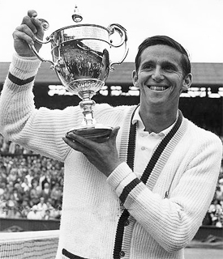
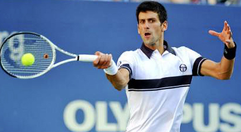
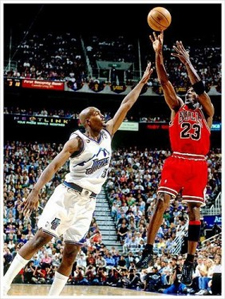
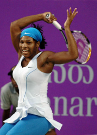

Previous: Walking the Mental Toughness Talk: The Gold Ball | 🏠 Mental Game Home | Next: What is Confidence?
What Is Choking?
Comprehensive unified tennis knowledge base — Fundamentals, Stroke Analysis, Reference Library, and more
What Is Choking?
By Allen Fox, Ph.D.

The fight or flight response: good for dealing with bears, but not useful in tennis.
Choking is one of the truly unpleasant parts of tennis competition, and it happens from time to time to everyone, from beginners to world champions.
What is it? It is basically debilitating fear!
Choking stiffens the muscles and makes even the simplest shot difficult and the difficult shots impossible. Fine motor skill evaporates as the body prepares a massive fight or flight reaction. This set of bodily responses may be excellent for fighting a bear with a club, but is not at all useful for guiding a tennis ball over a net and into a court.
Breathing becomes rapid and labored and judgment is impaired. Some players work themselves into cramps or back spasms. All in all, it is about as unhelpful a psychological state as a tennis player can imagine.
Fortunately, it doesn't happen all the time and there are steps one can take to reduce the worst of its effects. Unfortunately, it is a problem that is never solved completely.
The desperate desire for a positive outcome causes choking.
What causes it? Choking occurs because the player desperately wants a positive outcome, yet fears that he or she is not going to achieve it. It may be winning a tournament, impressing friends and bystanders, or avoiding a parental scolding, but whatever it is, the player is afraid of failing in the attempt.
The practical consequences of failure may be trivial, but to the player they feel vital. As we saw in a previous article (Click Here), our nervous systems are programmed to feel tennis matches are more important than they really are, notwithstanding obvious logic to the contrary. We naturally feel fear when we are in this symbolic fight but are uncertain of winning.
The 2007 US Open final between Roger Federer and Novak Djokovic provided, in addition to some great tennis, a terrific exhibition of choking by both players. There were great examples here of what causes players to choke and, if one does choke, how to reduce its damage. The following is a kind of emotional autopsy of the match, intended to provide a framework for our discussion on choking.
Federer was nervous at the start and had reason to be.
From the outset Federer was obviously nervous, and he had plenty of reason to be. In the previous year he had listened to the incessant drum-beat in the media about him being the greatest player of all time. He thought it had an attractive ring to it.
Is he or isn't he? The question had been endlessly massaged by the pundits as they counted down his assault on Pete Sampras' record of 14 majors. Federer had 11 going into the tournament, one more would put him ahead of Bjorn Borg and Rod Laver who were tied with him at 11, and would put him even with all-time great, Roy Emerson, at 12.
He had been playing magnificently going into the final, but there was still an obstacle in the way of the new record book numbers - the disagreeable task of beating Djokovic, a rising young talent who had defeated him in Montreal only a few weeks earlier and was a scary piece of work.
What would everyone say if he lost? When he lost twice in a row to Guillermo Canas earlier that year the talk suddenly became, "Well, Federer's good but not that good." It was enough to make anyone nervous.

A serene demeanor helped Federer survive his own choking.
So Federer looked shaky in the first set - missing more than usual. When he is feeling good his game functions (I hesitate to say anything this trite, but...) like a Swiss watch. He misses virtually nothing and winners flow like rum-punch at a toga party.
On the other hand, when he gets nervous his errors stand out blatantly in relief, and he often misses by stunningly wide margins. Maybe it is because he is normally so relaxed and confident that his infrequent bouts of nerves seem to make his game drop so precipitously.
Whatever the reason, when Federer gets nervous, it shows in his game, and it was obvious that he was nervous from the beginning. To his great credit, however, his manner on court remained serene and unchanged. He had too much class, intelligence, and discipline to show it in his demeanor.
As for Djokovic, the magnitude and novelty of his first Slam final didn't help his nerves much either, but he played solidly enough to serve for the first set at 6-5 and quickly went up 40-0, triple set point.
The set was his for the taking, but as most of us learn the hard way, it is at the finish that our nerves are most likely to become wobbly. Djokovic was no exception. He played the first set point cautiously, and Federer hit a winner.
"Easy" unforced errors are an indication of nerves among elite players.
Then the real trouble started. Federer hit two routine serve returns to Djokovic's backhand (his more consistent side) and Djokovic immediately missed them both badly, terribly uncharacteristic errors for him. Two more set points came and went, one on an easy forehand error and the other on a good shot by Federer.
Djokovic finally blew the game completely by double faulting on ad out. In general, there are unforced errors and then there are easy unforced errors - these last few by Djokovic were the easy ones. A player of Djokovic's quality normally makes very, very few of these, so making this many so close together can only be explained by nerves.
Djokovic managed to regroup in the tie breaker and was actually ahead a mini-break at 3-2 before the shaky nerves resurfaced and caused another easy error, following which he chucked his racket in disgust (never a good sign), and proceeded to lose the tiebreaker and set.
On the change-over Djokovic went into an emotional twit, now down a set when, but for the nervous errors, he should have been up a set. Frustration and agitation boiled over as he dashed his water bottle to the ground in disgust.

Was Federer thinking "Soon I'll be tied with Emmo with 12 Slams?"
Among the more interested observers of this emotional disarray was, of course, Federer, who could see that Djokovic was on the verge of self-destructing. All he had to do now was to start out the second set tough and squeeze him - a dose of solid pressure and Djokovic might crack completely.
It would have been natural for Federer to think, "Just play high-percentage, low-error tennis and I'll be tied with Emmo with 12 Slams." Unfortunately, these are just the kind of thoughts that get players into trouble, even geniuses like Federer.
When you see your opponent choking, you are often liable to start choking yourself. This is because you start to think, "He's choking. I've got him as long as I don't screw up." But that thought will make you cautious and hesitant to take your normal risks.
Djokovic served the first game of the second set, and, predictably, started out missing his first serve. Federer was handed two, short, easy second serves in a row but chipped both into the middle of the net.
Federer's nerves were clearly acting up. When Federer wants to take a risk and hit an aggressive return with his backhand he uses a flat or topspin stroke. When he wants to play it safe, he uses a slice and, unless the serve is huge, he very rarely misses it. These were his conservative slices, and badly missed ones at that, so, again the easy unforced error showed he was obviously nervous.
When Federer misses a slice return badly, nerves are in play.
Federer then proceeded to play so tightly and poorly that he ushered Djokovic right back into the match. He did everything he could to help Djokovic play better other than giving him backrubs on changeovers.
One thing he didn't do, however, was to lose his outward appearance of calm. Nevertheless, Djokovic was soon up 4-1 and had chances for a second "insurance" break on Federer's serve. But then Djokovic tightened up again, missed, and Federer held. Distressed at his latest blown opportunity, the shaken Djokovic immediately stumbled on his own serve and the set was now basically even.
But wonderful talent that he is, Djokovic was by no means through. With Federer serving and down 4-5, Djokovic had two set points at 15-40. Federer saved the first with an ace, and Djokovic handed him the second by overplaying a forehand early in the point, (another error due to errant emotion rather than random chance). Federer held. Finally, Djokovic allowed in just enough creeping negativity to cost him the second set tiebreaker, and he was now down two sets to love instead of up two.
Creeping negativity and Djokovic was now down two sets.
With a pall cast over Djokovic's side of the court and Federer just trying to grind it out, the third set was uninspiring. They both held serve and played evenly until Djokovic served at 4-5. It was here at deuce that his emotional disarray emerged to play its ultimate evil trick.
This is a huge point for a fully-functioning player who still has hopes of winning the match. After all, Djokovic is only 3 games away from winning the third set and three sets away from winning the championship.
He was going to have to win three sets to win the championship when the match started, and he was even closer to winning now - two more points to win the game, two more games to win the set, and then two more sets to win the match. Viewed from this perspective the first two sets were irrelevant. He was on the verge of winning the first of the three he needed.

Start of the match or two sets down, winning three sets would still mean the championship.
But of course that is not how he saw it. He was just off-balance enough to blow an easy backhand, get down match point, and follow with an ill-conceived, feeble drop-shot that landed halfway up the net. He had, at some level, given up.
The lessons to be learned here are important at any level of tennis. The first is that you should make every effort to limit the choking damage to only those points where you actually choke and miss.
You limit the choking damage by acceptance. This starts by acknowledging beforehand that you will, from time to time, choke and lose some points, just as you will, from time to time, miss some forehands and lose some points. Both must be quickly and routinely accepted as simply a natural and inescapable part of the game. Then put it out of your mind.
Accept choking as a routine and natural and inescapable.
That's how Federer did it. Recognize that everyone chokes on occasion, even the greatest players in the world. Of course this reasoning is easier for Federer, since at the time of this match he was the best player in the world.
Rod Laver said it well,
"We all choke. That's all right. We're not machines. What you have to learn is to accept the fact and not panic. It's the panic that loses the matches, not the nerves."
So if you choke, assume that nothing extraordinary has happened, and just keep plugging along. In this way the choking itself will only cost you a few points. On the other hand, you will get seriously hurt if you worry about the choking and think it indicates a character deficiency that is going to make you lose.
Choking, though obviously unhelpful, will not usually make you lose unless you overestimate its importance. People get themselves beaten by choking and reacting by feeling diminished, losing heart. They acquire, as Gordon Forbes so aptly put it in his classic book, "A Handful of Summers," that dreaded "sinking feeling."
Realize that you can choke and win anyway. A factor that often makes choking worse is the stigma in the minds of most people that is attached to choking and to people who choke.
Do believe that there is a stigma to being a choking loser?
We have all heard locker room snickers about people who are "losers" and who choke. It reminds me of the joke about Fred at the club who was reputed to have the ultimate loser's mentality. When he was ahead he eased up. When he was behind he got discouraged. When it was close, he choked!
Being considered a "loser" or "choker" hints of character deficiency and is embarrassing. We would all prefer to think of ourselves as Michael Jordan types, taking the final shot against Utah in the last second of the NBA championship game, sinking the jumper and walking off a heroic and courageous winner.
But whether you have the nerves of a Michael Jordan or not, don't believe for a second that choking means you have a loser's mentality. You can certainly choke and win. Champions do it all the time.

Not everyone has the nerves of Michael Jordan.
Reacting after you choke is what gets you beaten. Players often get themselves beaten by getting discouraged, angry, or otherwise emotionally off-balance after choking.
This was the crucial difference between Federer and Djokovic in the US Open final. Federer choked but remained disciplined and showed no overt reaction. He just kept trying to play his normal game and appear unperturbed. He might be choking, but he certainly wasn't going to let Djokovic know about it. In contrast, Djokovic reacted, got obviously upset, and probably lost the match because of it.
As it did with Djokovic, choking is most likely to occur at crucial points (when, for example, a player is ahead and about to win the set or match), so the emotional reaction is prone to be powerful and negative. But the set or match will still be at a relatively crucial stage on the next point, which gives the player all the more incentive to remain calm and practical, to quickly accept the errors, and to move forward with his or her normal game plan.
This does not mean that Djokovic completely lost his head and obviously threw away the match. He didn't, and his emotional upset probably only cost him a few points a set. However, in a 6-4, 7-5, or 7-6 set, the average difference in total points won by the winning player can be as little as 3 or 4, so those few points a set were likely to have been just enough to get him beaten. In the last game this was obviously the case.

Roger may have choked, but didn't react or show Djokovic
Choking and failing to finish at your first opportunity can toughen you for your next one. Djokovic's subsequent confrontations with Federer certainly show this. In the 2010 U.S. Open he defeated Federer in 4 sets after being down match point. And at the recent 2011 he dismantled him in 3. The experiences Djokovic went through in losing the 2007 final undoubtedly paved the way for this later success.
As we have noted previously, choking is most common when players have a chance to win the set or match - for example, when they are serving at 5-4. If this happens to you (and it happened to me more times than I care to recall) and your opponent levels the score at 5-all, you still probably have the edge. To start with, the pressure now shifts back to your opponent.
In general, when players are down they can often swing away freely and play quite well, feeling they have nothing to lose. Of course they have plenty to lose, but it just doesn't feel like it. However, once they catch up the "nothing to lose" feeling goes away.
Now they suddenly have something to lose, and they often tighten up, fearing that if they lose their serve now they will have made their comeback in vain and will be right back in the soup. If you have stayed motivated and alert you can often jump on them and break serve right back.

Serena rarely looks calm.
But even if your opponent does not experience the "catch-up" choke, you still have a small advantage. Assuming you keep your cool, you have had a chance to accustom yourself to the pressures of finishing. Your opponent hasn't. If he or she should get in position to win, he/she is likely to choke on this first time under this pressure, just as you did.
Meanwhile, if you get another opportunity to win, either by breaking your opponent's serve at 5-all or in the tie-breaker at 6-all, you are less likely to choke this second time around. This conclusion comes from the experience of watching hundreds and hundreds of matches.
But even if you do choke the second time, go after it again. Eventually you will figure it out and come through. The trick is to avoid letting any previous choking rattle you.
Both Venus and Serena Williams have won lots of matches in this way. Like most of us, they tend to choke when they get ahead and have a chance to win. But unlike most of us, they are so far superior to their opponents physically that when they are not choking no one has a chance against them.

Athletic superiority, yes, but also never discouraged.
The Williams sisters move as well or better than anyone else on the women's tour in addition to hitting the ball harder, serving better, and fighting more tenaciously. What ultimately gives them their victories is that after choking and maybe even falling behind they don't become discouraged. Rather they dig in and fight harder than ever.
Time and again I have seen Venus or Serena with a lead and opportunities to win, choke their way into a hole, and have their opponent end up serving for the match. Then they toughen up and loosen up.
They stop missing, run down every ball, and smack enough winners to pull even and finally into the lead. This time, however, having worked their way out of trouble and into position for the win, their nerves seem to quiet down, and they are usually able to push it through.
They never actually look calm, and often appear to struggle for emotional control, but determination increases their opportunities. Hence the saying, "The harder you try, the luckier you get." And the choking that they did earlier in the match now almost seems to help them, either by suggesting small adjustments in their games or simply because they have gotten used to playing under the pressure.
In the next article we continue to examine examples of how winning and choking can go hand and hand, and suggest additional ways of looking at and minimizing this universal phenomenon. Stay Tuned!
This article is excerpted from Allen's new book, Tennis: Winning the Mental Match, which will be available at the end of 2010 on Amazon and on Allen's new website, www.allenfoxtennis.net.
Read More From Allen!
Visit him at www.allenfoxtennis.net

Winning the Mental Match Dr. Allen Fox
Tennis is mentally the most difficult sport due to it’s personal nature which makes winning and losing feel more important than they are. In this new book, Allen offers his proven solutions to problems such as choking, reducing stress, finishing matches, and developing confidence. Based on a life time of high level play and coaching success, it’s a must for all competitive players.
Click Here to Order.

Winning may not be everything, but Dr. Allen Fox points out that, if we are honest with ourselves, winning is still eminently preferable to losing. In his new book, The Winner's Mind, Allen lays out an original step-by-step plan for succeeding at any of life's endeavors, based on his first hand and very personal observations of the careers of both world-class tennis players and successful businessman.
The bottom line is that even if you are not a born champion--and only a tiny percentage of us are--you can still use the success strategies of champions to tilt the odds in your favor. Writing with brutal honesty and dry humor, Fox lays out the common mental characteristics of winners in sports and in life. He explains the critical role of intellect over emotion. He analyzes the struggle between ambition and fear and the insidious and pervasive fear of failure that undermines so many of us.
He then outline how to confront and overcome these fears in your life and career, even when they are initially subconscious. Must reading from one of the great thinkers in tennis, and a Renaissance Man in life. Click Here to Order.
To purchase this book you can also send a check for $17.95 to Allen Fox, 1120 Inverness Place, San Luis Obispo, CA. 93401. The price includes shipping.

Allen Fox PhD is a former world class player, a coach, a psychologist, and one of the most original and insightful analysts in modern tennis. A top 10 American player from the glory days before Open tennis, Fox played many of the legendary greats, among them Roy Emerson, Rod Laver, Stan Smith, and Arthur Ashe. At Pepperdine he developed the men's tennis program into an elite contender for national titles, and gave Brad Gilbert the insights that became the foundation for "Winning Ugly". His book Think to Win is a modern classic. He has also starred in a series of acclaimed videos, including Pro Secrets of Match Play and Allen Fox's Ultimate Tennis Lesson.
Source: tennisplayer.net archive — What Is Choking.docx (John Yandell teaching library, 2002-2022). Extracted and rendered as HTML for Tennis Future Lab.